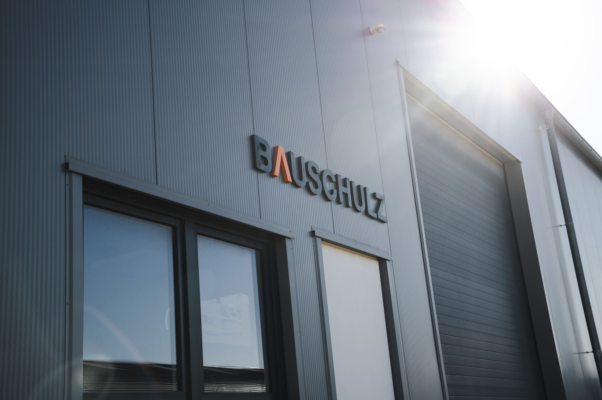
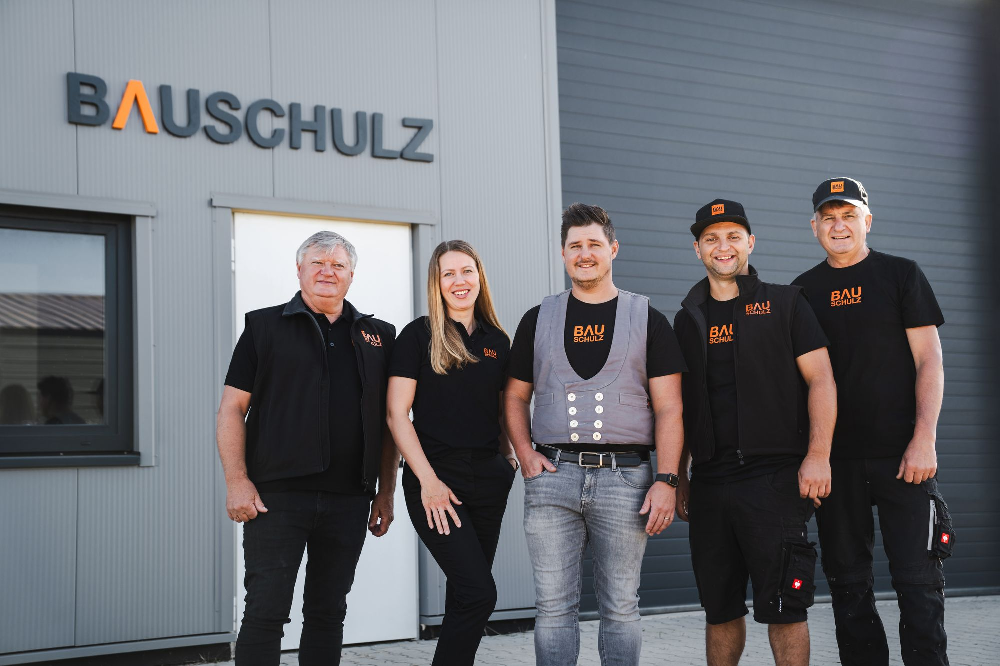

Hochbau, Tiefbau, Garten- und Landschaftsbau
Bauunternehmen in 2. Generation aus Sassenburg-Triangel.
- Bürozeiten
- Montag – Freitag: 08:00 – 17:00 Uhr
- Adresse
- Fehringstraße 8, 38524 Sassenburg
- Telefon
- 0176 31482066
- info@bauschulz.com
Unsere Sparten
-
Einfamilien- und Mehrfamilienhäuser, Wohnanlagen und Gewerbebauten.
-
Aushub, Fundamente und Brückenbau.
-
Pflasterflächen, Zufahrten, Wege und Außenanlagen.
Unser Team
Saubere Ausführung. Klare Abläufe. Verlässliche Termine.

Standort & Kontakt
BAUSCHULZ GmbH & Co. KGFehringstraße 8
38524 Sassenburg (Triangel)
- Bürozeiten
- Montag – Freitag
08:00 – 17:00 Uhr - Telefon
- 0176 31482066
- info@bauschulz.com
- 0176 31482066
Projekte u. a. in Sassenburg, Gifhorn, Wolfsburg-Ehmen, Wahrenholz, Wittingen und Knesebeck.
Beim Laden werden Kartendaten von OpenStreetMap abgerufen und Ihre IP-Adresse übertragen. Mehr dazu